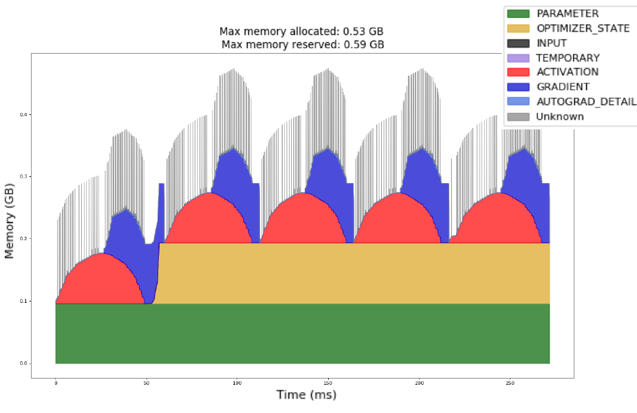

A broadcast can silently change your objective, and a small batch can still exhaust GPU memory. This reading connects tensor shapes, gradient buffers, and the lifetime of saved computations so you can reason about what your training loop actually does.
Use the worked examples to predict what a training run will do, then test the explanation. Try each exercise before opening its answer.
- Slides
- 165–182 of Feedforward Nets. Companion reading with additional examples and exercises.
- Session
- Tuesday, Sept 22. About 45–60 minutes for the core material; the language-model loss application is optional.
- By the end
- Distinguish evaluation mode, graph recording, and gradient clearing; detect broadcasting bugs; account for training memory; accumulate correctly weighted gradients.
- Assumes
- Handout #6: autograd and the training loop.
Find the reading for a slide topic
| Slides | Reading route |
|---|---|
| 165–167 | Execution modes and gradient buffers |
| 168–172 | Batching and tensor axes |
| 173–178 | Broadcasting and silent shape errors |
| 179–182 | GPU memory and responses to OOM |
1Execution modes, batching, and memory
Slides 165–182
1.1 Three switches with three different jobs
Slides 166–167
A module's training flag, autograd's recording mode, and a parameter's gradient buffer are separate pieces of state. Changing one does not automatically change the others. A useful way to read a training loop is to ask three questions: which forward behavior is active, is a backward graph being built, and what is already in the gradient buffers?
| Operation | What changes | What remains |
|---|---|---|
model.eval() | Sets the module and its children to evaluation mode. Dropout becomes identity; BatchNorm normally uses running statistics. | Autograd can still record operations; existing gradients are untouched. |
with torch.no_grad(): | Disables reverse-mode graph recording for operations in the block. | Dropout/BatchNorm retain their current mode; existing gradients are untouched. |
optimizer.zero_grad(set_to_none=True) | Clears .grad references for parameters tracked by this optimizer. | Weights, optimizer moments, and module mode are unchanged. |
backward() adds to leaf gradient buffers. For ordinary training, clear those buffers
before computing the next update's gradients; use model.train() when resuming training
after validation. Validation usually combines eval() and no_grad().
It needs no gradient clearing if it performs no backward pass.
import torch
from torch import nn
torch.manual_seed(4)
model = nn.Sequential(nn.Linear(3, 8), nn.ReLU(), nn.Dropout(0.5), nn.Linear(8, 1))
optimizer = torch.optim.SGD(model.parameters(), lr=0.01)
x, target = torch.randn(4, 3), torch.randn(4, 1)
model.train()
optimizer.zero_grad(set_to_none=True)
loss = (model(x) - target).square().mean()
loss.backward()
optimizer.step()
old_grad = model[0].weight.grad.clone()
model.eval()
assert model(x).requires_grad # eval does not disable autograd
with torch.no_grad():
prediction = model(x)
assert not prediction.requires_grad
torch.testing.assert_close(model[0].weight.grad, old_grad)
optimizer.zero_grad(set_to_none=True)
assert all(p.grad is None for p in model.parameters())
model.train() # ready for the next training stepYou validate under no_grad() but forget eval(). Then you train for two
batches, calling backward() and step() after each, without clearing gradients.
Explain the two independent mistakes.
Answer
Validation still uses training behavior: dropout remains random, and BatchNorm may update its running statistics. In training, the second backward adds new gradients to the first batch's buffers, even though the weights already changed at the first step. This is unintended accumulation, not a fresh gradient for the second batch.
Reference: PyTorch's grad modes and evaluation mode.
1.2 Batching: give every axis a meaning
Slides 168–172
A batch applies the same parameters to multiple examples. Vectorized tensor operations let the hardware process those examples together. For language data we use $X\in\mathbb R^{B\times T\times d}$: batch, sequence position, embedding coordinate. Token IDs have shape $(B,T)$; looking up each ID's embedding introduces the final feature axis. Other axis orders work if operations follow that convention. An axis's size does not tell you its meaning.
$$Y=XW^\top+b,\qquad W\in\mathbb R^{h\times d},\qquad Y\in\mathbb R^{B\times T\times h}.$$The multiplication acts on the last axis, while the bias broadcasts over examples and positions. Its leading cost is $BTdh$ multiply-accumulates. Larger batches can improve hardware utilization, but their saved activations also consume more memory.
import torch
torch.manual_seed(0)
B, T, d, h = 2, 3, 4, 5
X = torch.randn(B, T, d)
W = torch.randn(h, d)
b = torch.randn(h)
Y = X @ W.T + b
loop = torch.stack([torch.stack([W @ token + b for token in seq]) for seq in X])
assert Y.shape == (B, T, h)
torch.testing.assert_close(Y, loop)
print("Vectorized and loop results agree:", Y.shape)A classifier applies Linear(3, 5, bias=False), ReLU, then
Linear(5, 2, bias=False) to $X\in\mathbb R^{4\times3}$. It uses mean cross-entropy
with one integer class label per example.
- Give the hidden-state, logit, target, loss, and weight-gradient shapes. How many parameters are trained?
- Increase the batch from 4 to 40 examples. Which shapes and memory costs change?
- Instead repeat the original four examples ten times. At fixed weights, with no dropout or batch-dependent layers, how does the mean-loss gradient change? What if the loss uses a sum?
Work it out, then reveal the answer
The hidden states are $(4,5)$, logits $(4,2)$, targets $(4,)$, and mean loss a scalar with
shape (). PyTorch stores the weight matrices and their gradients as $(5,3)$ and
$(2,5)$. There are $5\cdot3+2\cdot5=25$ parameters; ReLU adds none.
At batch size 40, the first dimension of hidden states, logits, and targets becomes 40. Parameter and parameter-gradient shapes stay fixed, as does optimizer-state size for the same optimizer. Batch-dependent activation storage grows roughly tenfold for this architecture; total training memory need not grow tenfold.
Exact repetitions leave the mean objective and its gradient unchanged, apart from floating-point summation effects: both the sum and its denominator increase by ten. With sum reduction, the gradient is ten times as large. A larger batch of new examples can give a different mean gradient; the invariance here depends on duplicating the same data.
True or false: vectorizing an $L$-layer network allows all layers to be evaluated simultaneously because there is no longer a Python loop over examples.
Work it out, then reveal the answer
False. Examples and independent arithmetic within a layer can be batched, but a layer still depends on the preceding activations. A library or compiler may hide or fuse loops; it does not remove those mathematical dependencies.
1.3 Broadcasting: compatible shapes can still mean the wrong thing
Slides 173–178
For elementwise arithmetic, compare axes from right to left: paired sizes must match or one must be 1; absent leading axes act like size 1. Thus a feature bias of shape $(d,)$ can be added to $(B,T,d)$ without writing a loop or allocating repeated copies of that bias. The output still needs storage. Broadcasting knows sizes, not whether an axis means “example” or “feature.”
| Added to $(32,512,768)$ | Compatible? | Interpretation |
|---|---|---|
| $(768,)$ or $(1,768)$ | Yes | A feature bias shared over examples and positions. |
| $(512,1)$ | Yes | A position-specific scalar shared over examples and features. |
| $(1,512)$ | No | The last axis pairs 512 with 768. |
| $(32,1,1)$ | Yes | One scalar per example. |
The following regression bug is especially dangerous: subtraction succeeds, but compares every prediction with every target. Averaging afterward hides the extra axis.
import torch
predictions = torch.tensor([[10.], [20.], [30.]]) # (3, 1)
targets = torch.tensor([11., 22., 33.]) # (3,)
wrong = predictions - targets # (3, 3)
assert wrong.shape == (3, 3)
assert torch.isclose(wrong.square().mean(), torch.tensor(454. / 3.))
# Choose one consistent convention: one scalar per example.
matched = predictions.squeeze(-1) # (3,), including when B=1
assert matched.shape == targets.shape
errors = matched - targets
assert errors.tolist() == [-1., -2., -3.]
assert torch.isclose(errors.square().mean(), torch.tensor(14. / 3.))
# Alternatively: predictions - targets[:, None] gives shape (3, 1).The wrong objective is $B^{-2}\sum_{i,j}(\hat y_i-y_j)^2$, whereas the intended one is
$B^{-1}\sum_i(\hat y_i-y_i)^2$. The wrong objective pushes every prediction toward the batch's
mean target, rather than its paired label. Assert prediction/target shapes before a pointwise loss;
use squeeze(-1) rather than dropping every size-1 axis with squeeze().
Arithmetic, comparisons, and operations such as torch.where use elementwise
broadcasting. Matrix multiplication and advanced indexing use broadcasting on different axes:
import torch
# matmul contracts the inner matrix dimension (4), broadcasts leading dimensions.
a = torch.randn(32, 10, 3, 4)
b = torch.randn(10, 4, 5)
assert (a @ b).shape == (32, 10, 3, 5)
# Advanced indexing broadcasts the index tensors to form an index grid.
grid = torch.arange(12).reshape(3, 4)
rows = torch.tensor([[0], [2]]) # (2, 1)
cols = torch.tensor([[1, 3]]) # (1, 2)
assert grid[rows, cols].tolist() == [[1, 3], [9, 11]]You have hidden states $(B,T,d)$ and a valid-token mask $(B,T)$. How should you multiply them? Why might a test with $T=d$ fail to expose a wrong axis choice?
Answer
Use hidden * mask[..., None], making the mask $(B,T,1)$. A mask whose final axis
accidentally lines up with features can pass a size check when dimensions coincide; for example,
$(1,T)$ broadcasts against $(1,T,T)$ but masks features instead of positions. Test with distinct
axis sizes and check values, not just that the operation runs.
Reference: PyTorch broadcasting semantics.
1.4 What occupies GPU memory, and when?
Slides 179–182
In a fresh inference process, memory holds model parameters, live intermediate activations,
inputs/outputs, and temporary workspace. Without graph recording, intermediates can be released
once no operation or reference needs them. During training, backward needs saved tensors from
the forward pass, so many more remain live. Merely switching an existing training process to
eval() does not delete its optimizer state or old gradients.
Training memory includes parameters, parameter gradients, optimizer state, saved activations, and temporary workspace. For a simple float32 Adam accounting, parameters, gradients, and two moment buffers use roughly $16P$ bytes for $P$ parameters, before activations and temporary buffers. Mixed precision and implementation choices change this estimate.
Peak memory varies during a step. Optimizer state is often allocated lazily at the first step;
backward typically releases saved graph tensors, but parameter .grad buffers persist
until cleared. zero_grad(set_to_none=True) clears those references. Validation should
use model.eval() and torch.no_grad(): the first changes layer behavior,
the second disables graph recording. Holding graph-connected losses in a list can retain graphs;
logging loss.item() avoids that reference.
Under the simple float32 Adam estimate, what storage does a 10-million-parameter model need before activations? Does halving batch size halve all training memory?
Answer
A model has one billion parameters. Assume 2 bytes per parameter, 2 per gradient, and two Adam moment buffers of 4 bytes each per parameter. Ignoring activations, temporary buffers, and any master parameter copy, how many decimal GB are needed? Can you name the largest training-memory component without more information?
Work it out, then reveal the answer
Each parameter accounts for $2+2+4+4=12$ bytes, giving 12 billion bytes, or 12 GB. The two moment buffers together use 8 GB under these assumptions. No component is universally largest: activations depend on batch size, sequence length, architecture, and saved tensors; optimizer storage depends on the optimizer and precision. The original Q6.1 answer gives a fixed forward/backward ranking that is not generally valid.
| Point in a training step | Memory change to expect |
|---|---|
| Forward | Saved tensors accumulate as layers execute. |
| Backward | Gradient buffers appear; saved tensors can be freed after their backward operations. |
| Optimizer step | Updates use gradients; Adam's moment buffers are typically created on the first step. |
| Clear gradients | set_to_none=True releases gradient references; parameters and optimizer state remain. |

Read the figure from the bottom up. The green base is present throughout. The first persistent yellow band marks optimizer-state allocation; after that, each cycle starts from a higher baseline. Within a cycle, saved forward activations rise before backward consumes them and builds gradients. The tallest total stack matters for OOM, even if that peak lasts only briefly.
A model completes its first forward and backward, but runs out of memory during its first Adam step. A colleague suggests halving the batch. Use the figure to explain why that might be insufficient. What would a steadily rising baseline on later steps suggest instead?
Answer
Adam may be allocating persistent moment buffers for the first time. A smaller batch reduces activation storage, but if model parameters, gradients, optimizer state, and step workspace already exceed the budget, it cannot solve that problem. Estimate those costs separately. If the baseline continues rising after state initialization, inspect tensors retained across steps, such as stored losses or outputs that still reference graphs. A plateau in reserved allocator memory alone is not proof of a leak; distinguish live allocations from reusable reserved storage.
The allocator may keep freed storage reserved for reuse, so a GPU monitor need not show an immediate drop. An out-of-memory error depends on the peak live allocation and available memory, not an average over the step. Its location is informative: an error on the first Adam step may be optimizer-state allocation, while one late in forward often points to saved activations.
1.5 Responding to OOM: smaller live batches, same objective
Start by reducing batch size or sequence length when activation memory dominates. For evaluation,
use no_grad() to avoid saving a backward graph and eval() for evaluation
behavior. Do not place a training forward pass in no_grad() just to save memory:
that removes the path needed to compute its gradients.
Gradient accumulation performs backward after each small microbatch, releasing its saved tensors before processing the next. Keep the weights fixed until all microbatches in the update are processed. For an additive per-example objective,
$$L=\frac{1}{N}\sum_{k=1}^K\sum_{i\in\mathcal B_k}\ell_i, \qquad \nabla L=\sum_{k=1}^K\frac{|\mathcal B_k|}{N}\nabla L_k.$$If microbatches have equal sizes, divide each mean loss by $K$. If their sizes differ, weight by example count. For a token-averaged language-model loss, count valid target tokens instead. The following checks the gradients against one full batch, including an uneven final microbatch.
import copy
import torch
from torch import nn
torch.manual_seed(5)
full = nn.Linear(3, 2).double()
small = copy.deepcopy(full)
x = torch.randn(5, 3, dtype=torch.float64)
y = torch.tensor([0, 1, 0, 1, 1])
full.zero_grad(set_to_none=True)
nn.functional.cross_entropy(full(x), y).backward()
optimizer = torch.optim.SGD(small.parameters(), lr=0.1)
optimizer.zero_grad(set_to_none=True)
for xb, yb in zip(x.split(2), y.split(2)): # sizes 2, 2, 1
loss = nn.functional.cross_entropy(small(xb), yb, reduction="sum") / len(y)
loss.backward() # add this microbatch's contribution
for p_full, p_small in zip(full.parameters(), small.parameters()):
torch.testing.assert_close(p_full.grad, p_small.grad)
optimizer.step() # one update for all five examples
optimizer.zero_grad(set_to_none=True)This equality assumes examples do not interact through batch-dependent operations. BatchNorm statistics change with microbatching; dropout masks and floating-point order can also produce numerical differences. Accumulation saves activation memory, but does not shrink the model, its gradients, or its optimizer state. Summing graph-connected losses and calling backward only at the end retains all those graphs and defeats the main memory benefit.
Activation checkpointing instead saves selected boundary tensors and recomputes intermediates during backward. It trades extra computation for fewer saved activations and can be combined with accumulation. Mixed precision reduces storage for some tensors; distributing model state or offloading optimizer state addresses other memory costs. These methods have their own numerical and performance tradeoffs and are later-course topics.
Two microbatches contain 4 and 1 examples. Their mean losses are 2 and 7. What is the full-batch mean? What goes wrong if each mean is simply divided by 2?
Answer
The correct mean is $(4\cdot2+1\cdot7)/5=3$. Equal weighting gives 4.5 and overweights the lone example. The same weights must be applied before backward to obtain the correct mean gradient.
2Optional application: the language-model loss
Optional extension beyond slides 165–182, applying batching and evaluation to language models.
Handout #6 §3.1 gave us a training loop with a loss in it. For a language model that loss
is cross-entropy, and Handout #2 §4.4
computed it by hand. You will never do that again — but you will compute it in
PyTorch constantly, and there are three ways to get it wrong that are worth inoculating
against before you write your own loop.
2.1 It is one line — and it is already the loss
Handout #1 §1.5 established that F.cross_entropy(logits, target)
is $-\log p(\text{target})$. Handout #2 §4.1 established that perplexity is
$2^H$ where $H$ is that quantity averaged. Put them together:
API sketch: assumes a model, inputs, and targets from your training loop.
import torch
import torch.nn.functional as F
logits = model(inputs) # (T, V) -- one row of scores per position
targets = ... # (T,) -- the word that actually came next
loss = F.cross_entropy(logits, targets) # mean negative log-probability
ppl = torch.exp(loss) # perplexity
# Verify the identity by hand:
logp = F.log_softmax(logits, dim=-1).gather(1, targets[:, None]).squeeze(1)
assert torch.allclose(loss, -logp.mean()) # cross_entropy IS mean -log ptorch.exp, not 2 **
F.cross_entropy returns nats — it uses the natural log. So
perplexity is $e^{H}$, computed as torch.exp(loss). Writing
2 ** loss mixes the bases from Handout #2 §4.1 and silently gives you a
different number: for a loss of $4.76$ nats, $e^{4.76} = 117.1$ but $2^{4.76} = 27.2$. If
you want bits, convert first — loss / math.log(2) gives $6.87$ bits, and
$2^{6.87} = 117.1$ again. Both routes must agree; that is your check.
2.2 Trap: the off-by-one
A causal model predicts token $t$ from tokens $< t$, so the inputs and the targets are the same sequence, shifted by one. This is the objective-constructor widget from Handout #1 §2.1, in two lines:
x = torch.tensor([[5, 9, 2, 7, 4]]) # one sequence of 5 tokens
inputs = x[:, :-1] # [[5, 9, 2, 7]] -- drop the last
targets = x[:, 1:] # [[9, 2, 7, 4]] -- drop the first
logits = model(inputs) # (B, T-1, V)
loss = F.cross_entropy(
logits.reshape(-1, logits.size(-1)), # (B*(T-1), V) -- cross_entropy wants 2-D
targets.reshape(-1), # (B*(T-1),)
)
A length-5 sequence yields 4 predictions, not 5 — there is nothing to
predict the first token from, and nothing after the last to predict. Forget the shift and
you are training the model to copy its input, which produces a beautifully low loss and a
completely useless model. Note also the reshape: cross_entropy
wants (N, V) and (N,), so the batch and time axes get flattened
together. Perplexity does not care, because it averages over all positions anyway.
2.3 Trap: padding, and the flattering number it gives you
Real batches contain sequences of different lengths, padded to a common length. Padding positions can become easy to predict. If their losses are lower than those of real targets, including them drags reported perplexity down. If their losses are higher, it pushes perplexity up. Either way, padding is not part of the intended evaluation target set.
import torch
import torch.nn.functional as F
PAD_ID, V = 0, 16
# Already aligned target positions: 23 real targets and 17 padding targets.
flat_targets = torch.tensor([1] * 23 + [PAD_ID] * 17)
# Construct probabilities so real-target perplexity is 12.7,
# while padding is predicted with probability 0.999.
correct_p = torch.tensor([1 / 12.7] * 23 + [0.999] * 17, dtype=torch.float64)
probs = ((1 - correct_p) / (V - 1))[:, None].repeat(1, V)
probs[torch.arange(40), flat_targets] = correct_p
flat_logits = probs.log() # log probabilities are valid logits
masked = F.cross_entropy(flat_logits, flat_targets, ignore_index=PAD_ID)
unmasked = F.cross_entropy(flat_logits, flat_targets)
assert abs(torch.exp(masked).item() - 12.7) < 1e-10
assert 4.3 < torch.exp(unmasked).item() < 4.4
print(torch.exp(masked).item(), torch.exp(unmasked).item()) # 12.7, about 4.31
On that batch — 42% padding, and a model that has learned to predict padding almost
perfectly — the unmasked figure understates perplexity by about
two thirds. (The direction and size of the bias depend on the losses on padding versus real targets.) And nothing errors: you get a number, it looks good, and it is
wrong. Exclude padding targets with ignore_index or an explicit mask, and
sanity-check the denominator. Continue the example above:
total = F.cross_entropy(flat_logits, flat_targets,
ignore_index=PAD_ID, reduction="sum")
n_real = (flat_targets != PAD_ID).sum() # 23, not 40
assert torch.allclose(total / n_real, masked) # summed real-target loss / 23This is the same averaged-versus-summed distinction as Handout #1 Exercise 1.5b, with a subtler failure mode: there the risk was dividing by the wrong number, here it is counting the wrong tokens. Whenever you see a perplexity, ask what $n$ was.
2.4 Finding the token that cost you
Because $H$ is an average of per-token surprisals, you can always break it back apart — useful when a model is doing well overall and failing somewhere specific:
Continue the unpadded 2-D logits, targets, and loss from §2.1; use the same evaluated positions in both averages.
import math
logp = F.log_softmax(logits, dim=-1).gather(1, targets[:, None]).squeeze(1)
bits = -logp / math.log(2) # surprisal per token, in bits
worst = bits.argmax()
print(f"token {worst.item()} cost {bits[worst]:.2f} bits")
# and the average of those bars is exactly the loss:
assert torch.allclose(2 ** bits.mean(), torch.exp(loss))That last assertion is Handout #2 §4.1's two definitions meeting in code: the mean surprisal in bits, exponentiated base 2, equals the mean loss in nats, exponentiated base $e$. If it ever fails, check the log bases, reductions, and evaluated positions.
2.5 Application questions
Q5. A batch of sequences is padded to length 128; the average real
length is 40. You report perplexity without ignore_index. Is your
number necessarily too high or too low? What if padding is predicted almost perfectly?
Answer
Q6. You compute loss = F.cross_entropy(...) and report
perplexity as 2 ** loss. Your model's true perplexity is 117. What do
you report?
Answer
F.cross_entropy returns nats, so the loss
behind a perplexity of 117 is $\ln 117 \approx 4.76$; computing $2^{4.76}$ gives
$27.2$ instead of $e^{4.76} = 117$. You would be reporting a number roughly four
times better than reality, in a plausible-looking range, with no error raised. Use
torch.exp, or convert to bits first
($4.76 / \ln 2 = 6.87$ bits, and $2^{6.87} = 117$). §2.1.
Q7. A classmate trains a language model without shifting the targets — they pass the same sequence as both input and target. The loss drops almost to zero within an epoch. What has the model learned, and what will generation look like?